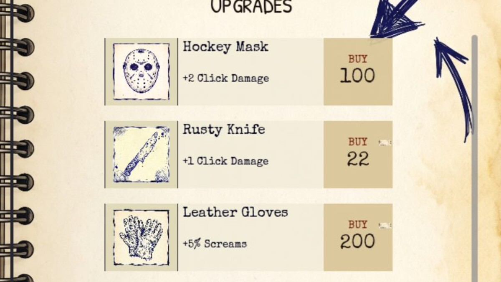

The notebook layout is now 100% responsive. The shop can hold twice the upgrades and sorts itself by what you can actually afford. Both came out of pre-launch stress-testing for the L5–L9 upgrade pack.
LANDSCAPE PIVOT COMPLETE
All five root-level Controls (Main, DeskBG, NotebookUI, FailureOverlay, EventBanner) now use Anchors + Full Rect, and the Spine between the two pages uses FILL+EXPAND to stretch the full HBox height. The legacy _apply_layout_for_resolution() function is gone — the scene tree now self-lays-out at any resolution.
A custom audit script reports 0 free-standing Position nodes across 15 .tscn files. Everything that needs to be responsive is on Anchors; everything that's a child of a Container stays Position (which is correct, because the Container controls its children). The most common source of false positives in naive layout audits — flagging Container children as broken — is filtered out by the script.
The visual change: nothing. The functional change: the layout no longer breaks if the user resizes the window or plays at a non-1280×720 resolution. This was the last bit of technical debt from the portrait era.
SHOP DENSITY: SCROLL + AFFORDABILITY SORT
The shop used to show 3 random upgrades from your unlocked pool. That works for the early game (L1–L4) where you have ~20 upgrades total, but with the L5–L9 growth pack incoming (40+ more upgrades), the random pick started to feel stingy. You're scrolling through screams, and the upgrade you actually want to buy is locked behind a random pick that doesn't include it.
Two changes:
- 3 → 6 displayed upgrades per refresh. Same random-pick from the unlocked pool (so it's still a fresh shop each refresh), just twice the surface.
- Sort by affordability. Affordable upgrades (cost ≤ your current screams) float to the top, unaffordable/locked sit below. Stable sort preserves the random-pick order within each bucket so the shop still feels intentional.
The container is now a ScrollContainer with an inner VBoxContainer, so the 6 cards scroll naturally when the panel is smaller than their combined height. Horizontal scroll is disabled — only vertical, and only when needed (auto mode).
Why scroll, not pagination or categories: this is the standard pattern from Cookie Clicker, Adventure Capitalist, and Egg Inc — same trade-off they made. For an idle clicker where momentum matters, scroll is the right call. Pagination breaks the flow (Next/Prev on every refresh feels clunky) and category tabs add UI complexity for a problem that "show me what I can afford right now" already solves.

Shop with affordability sort — affordable upgrades (Hockey Mask, Rusty Knife) float to the top, more expensive ones (Leather Gloves, Piano Wire, Bear Trap) sit below.TOOLING
One thing that came out of this session is a small reusable asset: a godot-ux-ui-master skill that encodes the responsive layout lessons (anchors vs containers vs position, size flags, common mistakes) for future agents and projects. It includes a scripts/audit_layout.js Node tool that scans a project and reports free-standing Position nodes vs in-container ones, with the right filtering for Container children.
Even if I never touch another .tscn file, the audit script is a useful safety net: node scripts/audit_layout.js <project-root> tells you in 2 seconds whether your responsive layout is actually responsive.
WHAT'S NEXT
Growth workstream is next: the L5–L9 upgrade pack (40+ new upgrades themed by level — Suburbia, Hospital, etc.), AchievementData expansion (8 → 50+), and the Prestige skill tree expansion (7 → 30+ nodes across 4 branches). The shop density work was the prerequisite for all of that — without the ScrollContainer, adding 40 more upgrade cards would have broken the right page entirely.
Steam app registration is the long-pole. Once the build is closer to launch-ready I'll do the Steam page and announcement cycle.